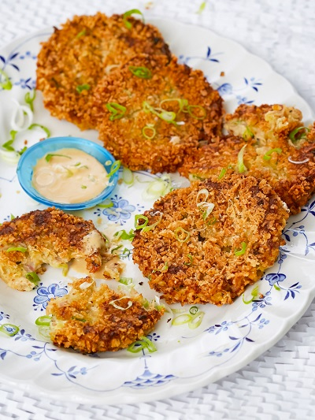

A great combination of has brown, sweet potato pumpkinand creamy cashew sauce,all piled high with herbs.
Below is a list of required ingredients:
Main Dish
Pumpkin and Chickpea Topping
Tumeric-Cashew Sauce
To Serve
Make sure you check on the items in the oven while cooking the potatoes, otherwise they may burn quickly.